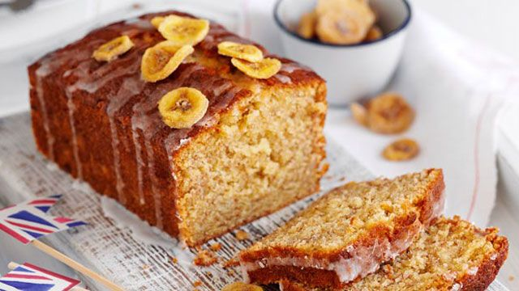

Banana Bread

Banana bread is love, banana bread is life.
- 140g butter softened, plus extra for the tin
- 140g caster sugar
- 2 large eggs beaten
- 2 very ripe bananas mashed
- 50g icing sugar
- handful dried banana chips for decoration
- Heat oven to 180C/160C fan/gas 4. Butter a 2lb loaf tin and line the base and sides with baking parchment.
- Cream 140g softened butter and 140g caster sugar until light and fluffy, then slowly add 2 beaten large eggs with a little of the 140g flour.
- Fold in the remaining flour, 1 tsp baking powder and 2 mashed bananas.
- Pour the mixture into the prepared tin and bake for about 50 mins, or until cooked through. Check the loaf at 5-min intervals from around 30-40 mins in the oven by testing it with a skewer (it should be able to be inserted and removed cleanly), as the time may vary depending on the shape of your loaf tin.
- Cool in the tin for 10 mins, then remove to a wire rack.
- Mix 50g icing sugar with 2-3 tsp water to make a runny icing.
- Drizzle the icing across the top of the cake and decorate with a handful of banana chips.
Home